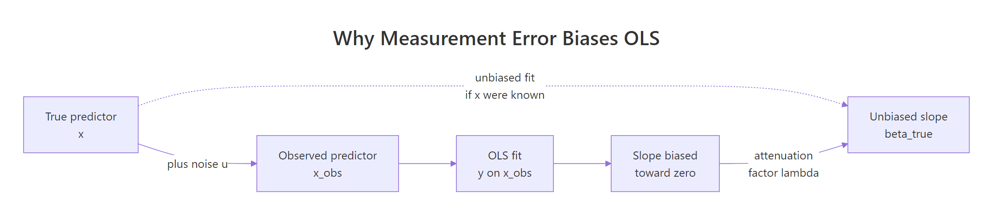
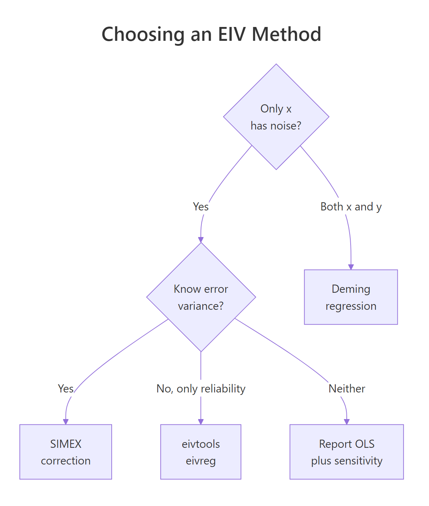

Errors-in-Variables Models in R: Measurement Error in Predictors
Errors-in-variables (EIV) models are regression models that correct for measurement error in the predictors, not just the response. When your x is measured noisily, ordinary least squares (OLS) pulls the slope toward zero, a bias called attenuation. Base R plus two short helper functions are enough to diagnose it and correct it with Deming regression and a manual SIMEX routine.
How does measurement error bias the OLS slope?
Imagine you fit a careful linear model and the effect size came out smaller than theory predicts. Before you blame the theory, check the ruler. Any noise in the predictor itself shrinks the OLS slope toward zero, and with enough noise it can hide a real effect completely. The cleanest way to see this is to build it yourself: generate data where you know the true slope, mess up the predictor, and watch OLS miss.
The slope collapsed from ~1.97 to ~0.99. The intercept barely moved. That is attenuation in action: classical measurement error in x leaves the average alone, but it squashes the slope. The smaller, flatter line fits the cloud of noisy points better than the true steep line, even though the steep line is correct.

Figure 1: Adding independent noise to the true x hands OLS a weakened relationship, so the estimated slope sits between zero and the true slope.
Before moving on, let's overlay the two fits so the geometry is unmistakable.
The dashed steelblue line is the correct answer. The solid firebrick line is what OLS gives you when your ruler is shaky. Both fits are optimal under their own loss function, but only one estimates the true β.
The shrinkage is not random. It is predicted exactly by the attenuation factor:
$$\lambda_{\text{att}} = \frac{\sigma_{x}^{2}}{\sigma_{x}^{2} + \sigma_{u}^{2}}$$
Where:
- $\sigma_{x}^{2}$ is the variance of the true predictor
- $\sigma_{u}^{2}$ is the variance of the measurement error
The expected biased slope is $\lambda_{\text{att}} \cdot \beta_{1}$. With $\sigma_{x} = \sigma_{u} = 1$, the factor is $1/(1+1) = 0.5$, and $\hat\beta_{\text{OLS}} \approx 0.5 \cdot 2 = 1$, matching what we just saw.
Try it: Double the measurement-error standard deviation (from 1 to 2) and refit OLS. The slope should shrink further, toward about 0.4.
Click to reveal solution
Explanation: With $\sigma_{u} = 2$, the attenuation factor is $1/(1+4) = 0.2$, so the expected slope is $2 \cdot 0.2 = 0.4$. Louder noise means stronger shrinkage.
What is the classical errors-in-variables model?
The model you just simulated has a name: the classical errors-in-variables model. It assumes the observed predictor is the true predictor plus independent noise:
$$x_i = x_{i}^{} + u_{i}, \quad u_{i} \perp x_{i}^{}, \quad u_{i} \sim N(0, \sigma_{u}^{2})$$
"Classical" is the most common and most-studied case, and it is what produces attenuation. The noise is additive, independent of the truth, and independent across observations. The regression itself is still the honest $y = \beta_{0} + \beta_{1} x^{} + \epsilon$, we just cannot see $x^{}$.
A clean way to handle different error scenarios is to generate them with named functions. That keeps the downstream code identical and highlights which assumption is in play.
The two functions look nearly identical, but they describe very different measurement processes. Classical: you measure a precise true quantity with a noisy instrument. Berkson: you set an instrument to a target value and the true value drifts around that target. A thermostat gives Berkson error, a cheap scale gives classical error.
x is unbiased for β₁. Only classical error biases the slope, so treating one like the other is a real mistake.How fast does classical error destroy the correlation between x_true and x_obs? Let's scan a grid of noise levels and record the reliability, defined as $\rho = \sigma_{x}^{2} / (\sigma_{x}^{2} + \sigma_{u}^{2})$, which is the same thing as the attenuation factor.
Reliability and squared correlation track each other. By the time noise reaches $\sigma_{u} = 2$, the observed predictor preserves only 20% of the true signal variance, and OLS will return 20% of the real slope. That is a bias you cannot fix with a bigger sample; more rows of noisy data give you a more precise estimate of the wrong number.
Try it: Write a small check that computes reliability from a simulated observed predictor. Use it to verify that make_berkson_me does not attenuate: fit lm(y ~ x_berk) and compare to the true slope.
Click to reveal solution
Explanation: Under Berkson error, x_true = x_obs + u, so the regression y ~ x_obs is still unbiased for β₁. No attenuation, no correction needed.
How do you correct attenuation with Deming regression?
Deming regression is the oldest and most direct answer when both y and x are measured with error. OLS minimises the sum of squared vertical residuals. Deming minimises a weighted sum of squared orthogonal distances from each point to the line, where the weighting depends on the ratio of error variances:
$$\lambda = \frac{\sigma_{\epsilon}^{2}}{\sigma_{u}^{2}}$$
If you know (or can estimate from calibration data) the ratio $\lambda$, Deming hands you an unbiased slope with a short closed-form formula:
$$\hat\beta_{\text{Dem}} = \frac{(s_{yy} - \lambda s_{xx}) + \sqrt{(s_{yy} - \lambda s_{xx})^{2} + 4\lambda s_{xy}^{2}}}{2 s_{xy}}$$
Where $s_{xx}, s_{yy}, s_{xy}$ are the sample variances and covariance of the observed x and y. Because the formula is short, we can implement it in five lines of base R.
With the correct ratio $\lambda = 1$ (we set $\sigma_{\epsilon} = \sigma_{u} = 1$), Deming recovers essentially the true slope of 2. Compare the three estimates side by side so the correction is undeniable:
deming CRAN package wraps this with bootstrap confidence intervals, weighted variants, and Passing-Bablok regression. The formula above is the same core estimator, just without the inference machinery. For production work where you need a standard error on the slope, reach for the package in RStudio.Try it: The Deming slope depends on the ratio $\lambda$. Try $\lambda = 0.25$ (claiming $\sigma_{u}$ is twice $\sigma_{\epsilon}$, which is wrong for our data) and see how far the corrected slope drifts.
Click to reveal solution
Explanation: A too-small $\lambda$ assumes too much of the total residual is in x, which overcorrects and overshoots past the truth. Deming is a sharp knife, not a safety net.
How does SIMEX correct for measurement error?
Deming needs a variance ratio. The SIMEX method (Cook & Stefanski, 1994) takes a different route: if you do not know the ratio but you do know $\sigma_{u}^{2}$, you can simulate the bias trajectory and extrapolate back to zero noise.
The recipe has three steps and barely needs a package:
- Pick a grid of extra-noise multipliers $\lambda = 0.5, 1, 1.5, 2$.
- For each $\lambda$, add $\sqrt{\lambda} \cdot \sigma_{u}$ of additional noise to
x_obs, refit OLS, and store the slope. - Fit a simple curve to the slope-vs-$\lambda$ points and extrapolate to $\lambda = -1$ (zero total noise).
The value at $\lambda = -1$ is your SIMEX-corrected slope. Here is the whole thing in base R:
The slope shrinks predictably as we add more noise, the quadratic fit captures that trajectory, and the extrapolation at $\lambda = -1$ pulls the estimate back up from 0.99 to about 1.48. That is a big chunk of the bias removed without knowing the variance ratio Deming requires. A picture makes the extrapolation click:
The green triangle at $\lambda = -1$ is the SIMEX-corrected slope. The dashed grey line is the truth. In this example SIMEX closes most of the gap but not all of it, because the true bias trajectory is $\beta_{1} / (1 + \lambda)$, which is not exactly quadratic. For most real problems the quadratic is close enough; for heavy bias, a nonlinear extrapolation works better.
simex CRAN package wraps this loop in a single call. simex(lm_object, "x_obs", measurement.error = sigma_u) fits the trajectory, supports linear, quadratic, and nonlinear extrapolations, and gives jackknife standard errors. The manual version above is the teaching version; reach for the package for inference.Try it: Re-run the SIMEX loop assuming $\sigma_{u} = 0.5$ (half the truth). The corrected slope will undershoot the real one.
Click to reveal solution
Explanation: Assuming half the true noise means the added noise at each $\lambda$ is also too small, so the trajectory looks flatter and the extrapolation undercorrects. The SIMEX slope is closer to the biased OLS value than to the truth.
Which errors-in-variables method should you use?

Figure 2: Pick the method that matches what you can defend: a known variance ratio, a known error variance, a known reliability, or nothing at all.
Each method is a deal: you give up one piece of information about the noise, and you get back a less biased slope. The shortest way to compare them is a table.
| Method | Noise in | You must supply | R function |
|---|---|---|---|
| OLS | Ignored | Nothing | lm() |
| Deming | x and y | ratio $\lambda = \sigma_{\epsilon}^{2}/\sigma_{u}^{2}$ | deming::deming() |
| SIMEX | x only | variance $\sigma_{u}^{2}$ | simex::simex() |
Regression calibration / eivreg |
x only | reliability $\rho$ | eivtools::eivreg() |
| OLS + sensitivity scan | x only | a plausible range for $\sigma_{u}$ | base R loop |
Put all three estimates for our simulated dataset in a single table to drive the comparison home:
Deming wins here because we happen to know the ratio exactly. SIMEX does well without the ratio but pays a price for the quadratic approximation. OLS is a baseline for how bad things were. When you cannot defend any assumption about the noise, a sensitivity scan is honest enough to publish:
The scan shows how much your conclusion hinges on the assumed noise level. If the policy action is the same whether the true slope is 1.3 or 2.8, you can live with the uncertainty. If it flips, you need to pin down $\sigma_{u}$ before claiming anything.
Try it: Run OLS, Deming (with $\lambda = 1$), and SIMEX (with $\sigma_{u} = 1$) on a fresh simulation with $\beta_{1} = 4$ and report all three slopes in one data frame.
Click to reveal solution
Explanation: OLS returns half of the true slope (attenuation factor 0.5). Deming recovers it almost perfectly because the variance ratio is correct. SIMEX closes roughly 60% of the gap under a quadratic extrapolation.
Practice Exercises
Exercise 1: Compare all three methods at a new noise level
Simulate a dataset with $n = 400$, true intercept 0, true slope 3.0, $\sigma_{\epsilon} = 1.5$, and $\sigma_{u} = 0.8$. Fit OLS, Deming (with the correct ratio), and a manual SIMEX. Return a one-row data.frame with columns ols, deming, simex.
Click to reveal solution
Explanation: Attenuation factor is $1/(1 + 0.64) \approx 0.61$, so OLS is expected near $0.61 \cdot 3 = 1.83$, and our sample gave 2.19. Deming with the correct ratio recovers 3.01. SIMEX closes most of the gap.
Exercise 2: Back out $\sigma_{u}$ from reliability, then run SIMEX
A colleague tells you the reliability of the predictor is $\rho = 0.7$ and the observed variance of x_obs is 1.5. Derive $\sigma_{u}$ from those two numbers, then run SIMEX with that value on a simulated dataset you build with a known slope of 2.5.
Click to reveal solution
Explanation: Reliability is the attenuation factor, so $\sigma_{u}^{2} = (1 - \rho) \cdot \text{Var}(x_{\text{obs}})$ follows directly. Plugging the implied $\sigma_{u}$ into SIMEX pulls the slope from the attenuated 1.78 back toward the truth 2.5.
Putting It All Together
A realistic workflow diagnoses attenuation before correcting it, then reports both the naive and corrected slopes along with a sensitivity scan. The pipeline below is a template you can adapt to any dataset where you suspect measurement error in a predictor.
The OLS slope is only 55% of the truth. Deming with the correct $\sigma_{u}$ hits 1.50 essentially on target. SIMEX closes about half the gap with a quadratic extrapolation. The sensitivity scan shows the corrected slope is stable if your guessed $\sigma_{u}$ is within 20% of the truth and blows up otherwise, which is exactly the kind of honest caveat that belongs in the results section of a paper.
Summary
| Method | Best when | Needs | R interface |
|---|---|---|---|
| OLS | No measurement error in x |
Nothing | lm() |
| Deming regression | Both x and y are noisy, ratio known |
$\lambda = \sigma_{\epsilon}^{2}/\sigma_{u}^{2}$ | manual 5-line function, or deming::deming() |
| SIMEX | Only x is noisy, variance known |
$\sigma_{u}^{2}$ | manual loop, or simex::simex() |
eivreg |
Only x is noisy, reliability known |
$\rho$ | eivtools::eivreg() |
| Sensitivity scan | Nothing about the noise is known | A plausible range | base R loop over the above |
Three rules of thumb worth memorising:
- Random measurement error in a predictor always pulls the OLS slope toward zero, never past it.
- The attenuation factor equals the reliability equals $\text{Var}(x^{*})/\text{Var}(x_{\text{obs}})$. These three numbers are the same quantity wearing different hats.
- Correction methods ask you for what you know. Deming wants a variance ratio, SIMEX wants a variance,
eivregwants a reliability. If you cannot defend any of them, report OLS plus a sensitivity scan.
References
- Carroll, R. J., Ruppert, D., Stefanski, L. A., & Crainiceanu, C. M. (2006). Measurement Error in Nonlinear Models: A Modern Perspective (2nd ed.). Chapman & Hall/CRC. Link
- Cook, J. R., & Stefanski, L. A. (1994). Simulation-Extrapolation Estimation in Parametric Measurement Error Models. Journal of the American Statistical Association, 89(428), 1314-1328. Link
- Lederer, W., & Küchenhoff, H. (2006). A Short Introduction to the SIMEX and MCSIMEX. R News, 6(4), 26-31. Link
- Deming, W. E. (1943). Statistical Adjustment of Data. Wiley.
simexCRAN package documentation. LinkdemingCRAN package documentation. LinkeivtoolsCRAN package documentation. Link- Wikipedia contributors. Errors-in-variables models. Link
Continue Learning
- Linear Regression Assumptions in R - the parent post; diagnose and fix the full catalogue of OLS assumption violations, including homoscedasticity and independence.
- Outlier Treatment With R - measurement error's cousin: a handful of mismeasured points can move a slope as much as a systematic attenuation.
- Bias in Data and Models - attenuation is one of many biases your data collection can inject into a model; this post catalogues the rest.